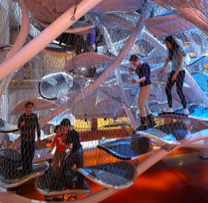
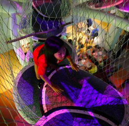

Infinity Climber
Crawl into an adventure in the world’s first suspended climbing play space of its kind. The structure itself measures 26 feet wide, 24 feet deep, and 19 feet tall. It is surrounded by 19 miles of hand-threaded wire that forms a protective mesh to prevent climbers from falling to the ground below. With multiple routes to explore, the Infinity Climber is a thrilling climbing gym for the 21st century. As part of our new safety protocols, only one person/family can enter at a time. Guests must use hand sanitizer before and after climbing, and masks must be worn at all times.
64 petal-like platforms create multiple pathways through the structure
More than 19 miles of hand-threaded wire mesh encloses the structure, and prevents climbers from falling